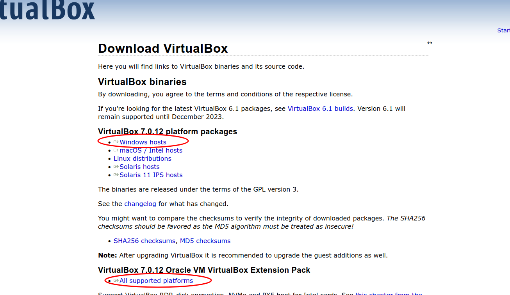
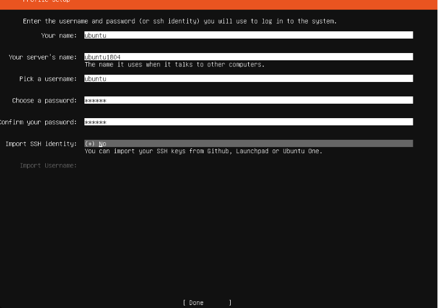
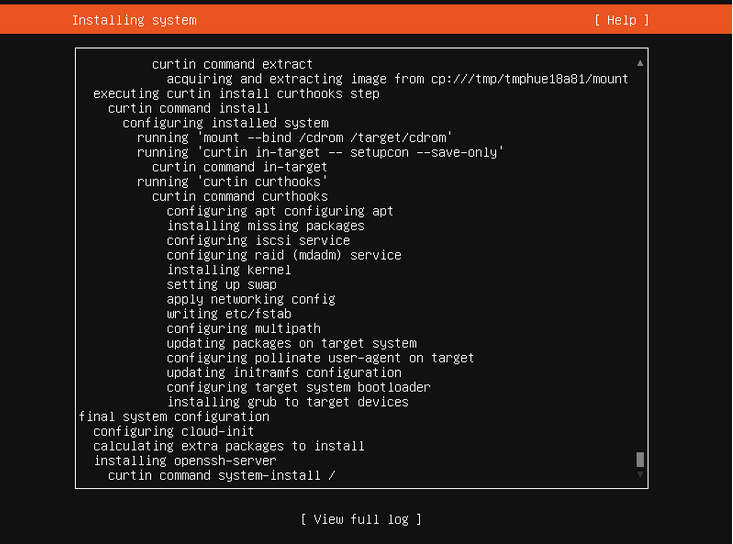
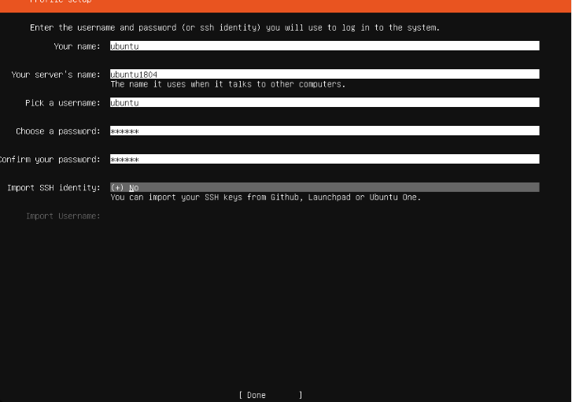
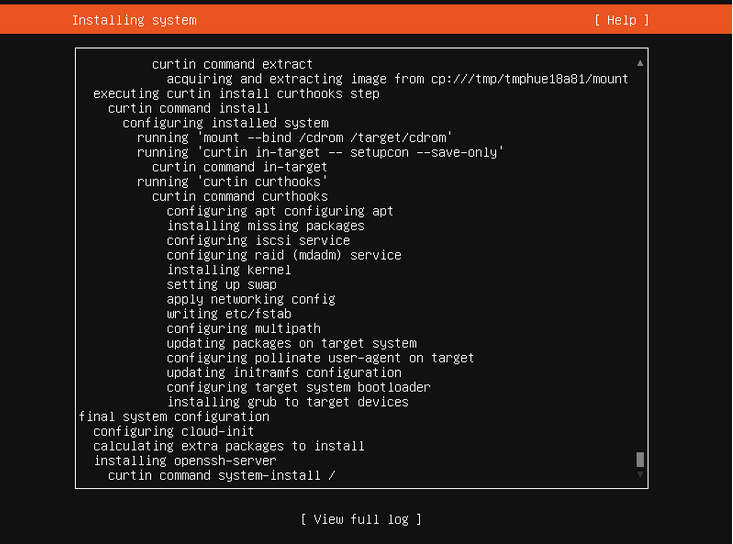

Setting up a Web Server
A web server on the hardware side is a computer that stores web server software and a websites component files it connects to the internet and supports physical data interchange with other devices while on the software side it includes ways to control web users access to hosted files and we will be setting that up today.
Basic Terminology
Here are some basic terms you should know before hand:
Command Shells
Virtualization
Apache
Virtual Box
Ubuntu Server
Virtual Machine
Step 1 Installing VirtualBox
Now to begin installing virtual box the first thing we need to do is head to https://www.virtualbox.org/wiki/Downloads and download our OS packages in this case it will be windows alongside the extension pack:

Once this is done we want to run the installer that was downloaded after the installation is done we want to open the application then go to our extension pack and double click it this will start a download in virtualbox the extension pack allows us to use our physical usb devices inside of our vm.
Step 2 Installing Ubuntu Server
Next is installing Ubuntu Server first we need to go to the official website and download the server OS to use with our vm which is located here https://ubuntu.com/download/server navigate to this website and click download ubuntu server once we have this we can begin to create our server. Now it is time to create our vm and install you can name it anything you like but the important things here are the ISO image and skip unattended installation inside of iso image we want to browse and find the ubuntu server image we just downloaded once we select it navigate to skip unattended installation and click the box it should look like this:
 Now click next and we should see our base memory and processors the minimum memory that our vm should have is 2 gbs and the minimum for our processors should be 2 one can be used however there is a big chance that it will slow your computer down greatly once that is set click next now we have our virtual hard disk for Ubuntu Server all we need is 10 gbs so set your drive amount to that and click next after that we click finish and we can begin installation. Now click start on your vm and a menu will pop up use the arrow keys to navigate and enter to select click enter on try or install, now select your language and a installer update should pop up navigate to update to the new installer and click enter now the language layout of your keyboard is next chose which options you like with the arrow keys and enter. Now This Screen Should pop up:
Now click next and we should see our base memory and processors the minimum memory that our vm should have is 2 gbs and the minimum for our processors should be 2 one can be used however there is a big chance that it will slow your computer down greatly once that is set click next now we have our virtual hard disk for Ubuntu Server all we need is 10 gbs so set your drive amount to that and click next after that we click finish and we can begin installation. Now click start on your vm and a menu will pop up use the arrow keys to navigate and enter to select click enter on try or install, now select your language and a installer update should pop up navigate to update to the new installer and click enter now the language layout of your keyboard is next chose which options you like with the arrow keys and enter. Now This Screen Should pop up:
 here we want to choose ubuntu server and select done next should be your network connections setup as long as your host computer has internet this should not be a issue as long as you do not have something you want to set up click enter on done, next is the proxy address if you do not have one hit done if you do enter it and hit done.
Your mirror address should not be changed hit done. Next is harddrive set up we want to click use an entire disk and set up this disk as an lvm group incase we want to add other hard drives later and click done. After that we click done and continue until we reach this screen:

this is were we type our server name and credentials to sign in make sure to write this down and once you are finished hit done.
Next a screen should come up asking you if you want to install openssh server navigate to the box and click enter to download it make sure a x is in the box then click done.After this point you can keep clicking next/done/continue as you wont need a other services until you reach this screen:

once this screen is done reboot now will pop up under view full log you want to navigate to it and select it and on next boot it will ask you to remove the installation media hit enter it will restart again and when you are back hit enter it will ask for the credentials you typed before hand enter them and you are good to go.
here we want to choose ubuntu server and select done next should be your network connections setup as long as your host computer has internet this should not be a issue as long as you do not have something you want to set up click enter on done, next is the proxy address if you do not have one hit done if you do enter it and hit done.
Your mirror address should not be changed hit done. Next is harddrive set up we want to click use an entire disk and set up this disk as an lvm group incase we want to add other hard drives later and click done. After that we click done and continue until we reach this screen:

this is were we type our server name and credentials to sign in make sure to write this down and once you are finished hit done.
Next a screen should come up asking you if you want to install openssh server navigate to the box and click enter to download it make sure a x is in the box then click done.After this point you can keep clicking next/done/continue as you wont need a other services until you reach this screen:

once this screen is done reboot now will pop up under view full log you want to navigate to it and select it and on next boot it will ask you to remove the installation media hit enter it will restart again and when you are back hit enter it will ask for the credentials you typed before hand enter them and you are good to go.
Step 3 Installing Apache
Beforehand we want to update everything in our system to do that we want to run sudo apt update twice then we can begin Installing Apache is the command we want to run is
sudo apt install apache2 -y the -y will answer yes to all prompts allowing it to install without issue.
Step 4 Setting up the Firewall
to set up our file wall we want to run sudo ufw enable to enable it then sudo ufw allow 'Apache' this allows apache through our firewall so no issues occur and when using ssh we want to run sudo ufw allow 'OpenSSH' and that will allow ssh through after all of that is done we want to run sudo ufw status to make sure our firewall is up and running and to make sure apache and ssh is allowed through our firewall.